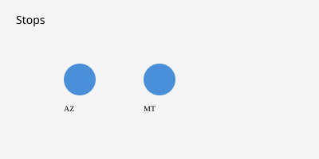

United States · Elections · 14 October 2026
Trump holds midterm rallies in Arizona and Montana

What is agreed across desks
President Donald Trump held two campaign events on 14 October 2026. The first was in Bullhead City, Arizona, supporting Republican candidates including gubernatorial nominee Andy Biggs. The second was at Majestic Valley Arena in Kalispell, Montana, supporting Aaron Flint, the Republican nominee for the open seat in Montana’s 1st Congressional District, and Kurt Alme in the Senate race. Local and national outlets reported that Trump arrived after an earlier stop in Alaska the previous day. Montana Free Press, Flathead Beacon, and AP live coverage confirm the Kalispell location and the candidate endorsements. Trump announced during the Montana speech that the Department of War would establish a new “Super Range” in Montana for testing advanced weapons, autonomous systems, and hypersonics. He also spoke about gun rights and tariffs.
Attendance estimates from Montana outlets range from roughly 4,800 (set capacity in one report) to “several thousand” or “more than 5,000.” No single independent official count has been published. The arena’s published capacities vary across sources between roughly 2,600 seats and higher occupancy figures. Road closures and traffic measures were reported by local authorities.
What is only a quote
Trump’s characterizations of Democratic candidates as “far-left lobbyist phony” or similar phrasing are campaign speech. Claims about the effect of tariffs on prices, the necessity of the new testing range, or the outcome of the midterms are statements by the speaker. Opponents’ responses, if any, are likewise statements. No independent verification of the Super Range’s scope, budget, or timeline beyond the announcement appears in the contemporaneous reporting.
Mechanism and history
Midterm elections in the United States elect all House seats and one-third of the Senate, plus many state offices. The president’s party has historically lost House seats in midterms, though the magnitude varies. Montana’s 1st District is an open seat vacated by Republican Ryan Zinke. The state has voted for Trump in prior presidential elections. Campaign rallies in the final weeks serve to mobilize the base and generate local media. The announcement of a new military testing facility is a policy statement made in a political setting; subsequent appropriation, environmental review, or base realignment actions would require separate administrative or congressional steps not detailed in the rally coverage.
The Majestic Valley Arena is a privately owned equestrian and event facility north of Kalispell that opened in 2002. It has hosted rodeos, concerts, and community events. Its use for a presidential campaign rally is a booking, not a change in ownership or status.
What the story is not
The events are not legislative votes or executive orders. They do not by themselves alter the electoral map or the composition of the next Congress. Attendance at a rally is not a measure of statewide vote intention. The Super Range announcement is not the opening of a completed facility.

Source articles and scores
| Outlet | Headline | T | N | C |
|---|---|---|---|---|
| AP | GOP strategy shifts ahead of Election Day as Trump campaigns | 96 | 0 | 98 |
| Montana Free Press | Trump rallies for Flint in Kalispell | 95 | 0 | 97 |
| Flathead Beacon | At Kalispell Rally, Trump Urges Montanans to ‘Get Out and Vote’ | 94 | 0 | 96 |
Image credit: Wikimedia Commons File:Glacier_National_Park_Montana.jpg (check license on file page; type landscape). Local fallback SVG committed under images/.